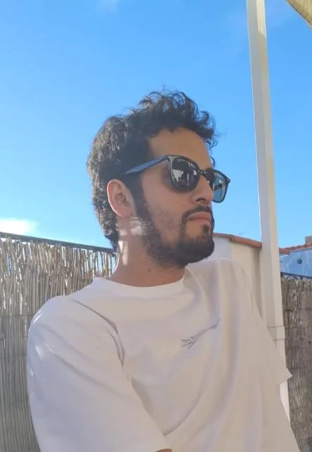
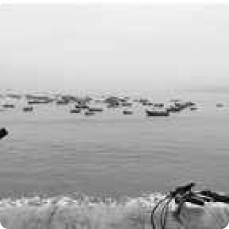
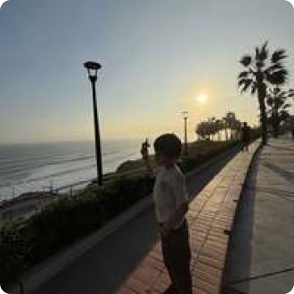

Sobre mí
Fernando Catter
Product designer y diseñador UX/UI que trabaja en todo el producto, desde decidir qué debe hacer hasta hacer que los detalles funcionen
Mi trabajo abarca definición de producto, diseño de interacción, diseño de interfaz, sistemas y UX writing.
Lima, Perú. Trabajo en husos horarios de Estados Unidos. Inglés y español.

Me gusta trabajar en las costuras
¿Qué debería saber ya el producto antes de hacerle una pregunta a alguien? ¿Qué corresponde a la interfaz y qué al sistema que está debajo? ¿Cuándo debe actuar el producto y cuándo debe quedarse callado? ¿Qué partes de una experiencia deberían cambiar para cada cliente y cuáles deberían mantenerse constantes?
De primer diseñador a socio de producto
Entré a Vinsyt en 2022 como su primer diseñador. La empresa tenía un producto para concesionarios, pero ninguna app de consumo y ninguna práctica de diseño establecida.
Desde entonces he trabajado en la app de consumo, la experiencia web del propietario, las comunicaciones, el programa de referidos y el design system compartido que está detrás.
Trabajar en un equipo pequeño me ha mantenido cerca de todo el proceso de producto. Ayudo a definir alcance y flujos, diseño la interfaz y el copy, construyo componentes y estados, y sigo involucrado con ingeniería mientras el trabajo pasa a producción.
Cómo trabajo
Entender antes de dibujar
Empiezo con preguntas. La calidad de la interfaz suele depender de contexto que no se ve en el brief.
Hacer visible la decisión
Un buen flujo debe dejar claro qué sabe el producto, qué le está pidiendo a la persona y qué va a pasar después.
Diseñar el sistema además de la pantalla
Busco las reglas detrás de las decisiones que se repiten para que el producto pueda crecer sin que cada función nueva se convierta en un lenguaje de diseño nuevo.
Mantenerme cerca de la entrega
Las APIs, los datos, las restricciones de implementación y las reglas de contenido afectan la experiencia. Construí los prototipos de este sitio y el sitio mismo, que es donde aparecen los problemas que un frame estático esconde.
Usar IA en el trabajo real
Uso IA todos los días de trabajo. Manejo Figma a través de su servidor MCP para construir y editar boards directamente, y Claude Code para construir este sitio y los prototipos que tiene. En Vinsyt he construido flujos agénticos e integraciones MCP como parte del trabajo de producto. Cambió qué tan rápido llego a algo que puedo mirar. No cambió qué es lo que lo hace correcto.
Qué estoy buscando
Me interesan roles de Product Design y UX/UI donde pueda aportar tanto a la dirección del producto como a la calidad de la experiencia.
Trabajo especialmente bien con equipos donde los diseñadores se mantienen cerca de producto e ingeniería y tienen suficiente autonomía para seguir un problema desde la definición hasta la entrega.
El correo es la forma más rápida de contactarme. Lima, Perú, coincidencia total con el horario de Estados Unidos.
Lejos de la pantalla
Algo de cómo se ve el resto.

